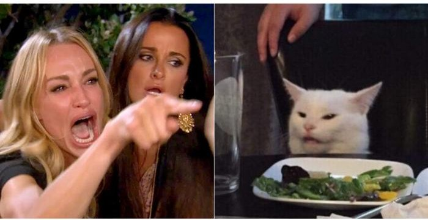

1
字符笑脸
用标点符号避免玩笑被误读。
在聊天框的方寸之间，
情绪一直在更新语法。
每一次形式更替，背后都藏着新的屏幕、新的平台，和一种还没被好好说出来的情绪。
用标点符号避免玩笑被误读。
把脸竖过来，情绪有了细节。
12×12 像素，第一次被装进口袋。
预设表情成了聊天的通用词。
图和字拆开，谁都能二次创作。
会动的情绪，也可以即时生成。
斯科特·法尔曼在电子公告板上留下 :-) 和 :-(，提醒大家：文字不总能传达语气。
:-)日本 i-mode 的绘文字让符号不再依赖键盘。图像，开始成为移动沟通的默认语言。
▦模板、滤镜与生成工具降低了创作门槛；你甚至不必有原图，也能表达那个瞬间。
✦按形式、情绪或关键词筛选。点击“复制”，或直接右键任何馆藏，即可把它带进聊天框。
右键卡片也能复制
颜文字 · 开心
颜文字 · 尴尬
黄脸 · 开心
黄脸 · 敷衍

梗图 · 生气 / 抵触

梗图 · 低姿态 / 敷衍

梗图 · 认可
动态 · 快乐上头
它不是文字表达的替代品。恰恰相反，它替文字补上了最容易丢失的那部分：语气、关系和默契。
在纯文字的对话里，“好的”可能是同意、敷衍，也可能是生气。表情包像一句话的环境音：不用解释太多，却让对方知道你说这句话时是什么表情。
更重要的是，一张被反复使用的梗图，会变成小圈子里的暗号。认得它，意味着我们共享过某段互联网记忆；改造它，意味着我们可以把自己的处境也塞进这份记忆里。
三题很快。别想太久，第一反应往往就是表情包最擅长传达的东西。